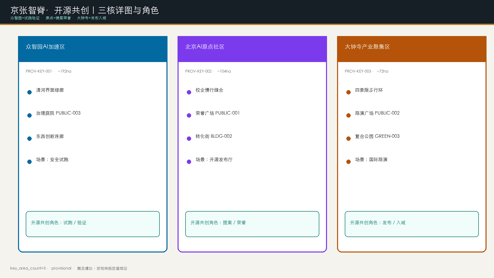

京张智脊·开源共创：公共先行的开源共创
设计依据与资料清单
本 formal 方案以《百年京张AI创新带城市设计国际方案征集资格预审公告》为第一依据，并以 brief/site-package/ 任务、允许设计空间、来源清单、标准快照与 provisional 几何为机器可读依据。[source:OFFICIAL-ANNOUNCEMENT] 给出项目名、三层文字范围与面积口径；[source:AGENT-TASKBOOK] 给出 agent.1–agent.6 与禁用表述；[source:SITE-PACKAGE] 与 [source:SOURCE-REGISTRY] 约束资料可用级别；[source:PROCESSED-FACT-PACK] 仅作导航；[source:BOUNDARY-SOURCE] 与 [source:KEY-AREA-SOURCE] 标明 provisional 边界不得冒充官方红线。公开索引内阅读入口见 [source:PUBLIC-BRIEF]。
标准响应覆盖 [standard:PROJECT-OFFICIAL-ANNOUNCEMENT]、[standard:PROJECT-AGENT-OPEN-CALL-TASKBOOK]、[standard:MOHURD-URBAN-DESIGN-MEASURES]、[standard:MOHURD-CONTROL-DETAILED-PLANNING]、[standard:MNR-LAND-USE-CLASSIFICATION-GUIDE] 与待补 [standard:MOHURD-ARCH-DESIGN-DEPTH-2016]。现状诊断由 [depth:existing_conditions_diagnosis] 约束：在公开包缺控规/权属/市政精细数据时，以“文字范围+provisional几何+公开任务”为可讨论基线，强度与拆改留列为待确认。
独占机制（与同名“智脊”方案的差异点）：本方案不只提出线性廊道结构，而是把公共领域骨架绑定一套可审计的 开源共创——任何 AI 场景或公共界面改造，都必须走「提案 Issue → 资料边界 Dataset → 限时限域沙盒 → 人工与公众复核 → 合并入库 / 必要时回滚」；合并对象是可验证的公共改进，不是企业广告或个人排行榜。国际实践（King's Cross 公共先行、Kendall 近校短路径、one-north 组团分化）仅作 [source:CASE-KINGS-CROSS]、[source:CASE-KENDALL]、[source:CASE-ONE-NORTH]、[source:CASE-STATION-F] 的 background_only 方法参照，不作红线或控规依据。

空间证据以 [data:geometry/site_boundary.geojson#SITE-001]、[data:geometry/key_areas.geojson#PROV-KEY-001] 与 [metric:site_area_sqm]、[metric:key_area_count] 为准。提交边界复算面积 [metric:site_area_sqm]=11412825.386 平方米；正式 polygon 到位后整体重算。
三层范围工作框架
三层递进由 [depth:three_level_scope_framework]、[depth:overall_spatial_structure] 与 [standard:PROJECT-OFFICIAL-ANNOUNCEMENT] 约束：统筹 43.6 km² 回答生态与城市形态；总体 11.4 km² 落到公共骨架、用地平衡、交通市政与风貌建议；重点 368.4 ha 对三核做街区级详图验证。[data:geometry/site_boundary.geojson#SITE-001] 与 [data:geometry/key_areas.geojson#PROV-KEY-001] 提供范围索引。
总体概念为 京张智脊（JingZhang AI Civic Spine）+ 开源共创 协议：论证顺序为 原则宪章 → 公共领域骨架 → 用地/街块回应 → 三核详图 → 开源共创 试点 KPI。空间动作在提交边界内组织廊道与节点，不新画法定红线。

统筹研究范围产业与未来城市研究
本节响应 [source:AGENT-TASKBOOK] 与 [standard:PROJECT-AGENT-OPEN-CALL-TASKBOOK]，并写入可检验的设计原则宪章。
京张智脊设计原则宪章（10条，概念建议）
- 1. 公共领域先行：街道与广场骨架先于地块填充。
- 2. 文脉可步行：京张铁路记忆必须进入日常慢行，而非仅作装饰。
- 3. 近校短路径：原点社区以分钟级步行连接高校与转化空间（Kendall 逻辑，方法参照）。
- 4. 组团分化、骨架共享：三核功能不同，但共享智脊慢行与蓝绿系统（one-north 逻辑，方法参照）。
- 5. 混合但不失序：混合规则写清主用途与可兼容层，不作法定管制伪装。
- 6. 开源共创 可审计：AI场景必须可提案、可沙盒、可人工复核、可关闭、可回滚。
- 7. 低扰动更新：保留优先，重资产等待权属与控规。
- 8. 开放界面：拒绝封闭园区感，首层与广场对公众友好；惠及居民、青年、学生、游客与弱势群体可达。
- 9. 长期运营可见：活动与荣誉墙进入年度节奏，而非一次性表演。
- 10. 概念边界诚实：凡缺官方条件，一律待确认；不伪造批准。
命名与识别（agent.1）：主名称 京张智脊·开源共创 / JingZhang AI Civic Spine · Open Co-Creation；副名称智脊绿廊、开源原点、众智加速核、大钟寺智能原生港、开源荣誉墙。Logo 概念：铁轨剖面→开源分叉→合并箭头（merge chevron）；主色深青/轨道灰/琥珀金。字体商标另行清权。与市场上仅强调“脊/廊”的方案相比，本方案以 开源共创 协议 作为可记忆差异。
全球案例→海淀转化机制（agent.2）（避免罗列；案例均 background_only）：
转化分工概念建议：众智园=全栈与标准治理；原点=开源与近校转化；大钟寺=智能原生消费与国际交往；中关村科技服务翼=法务/IP/投融资；小月河场景赋能翼=生活与公共服务试验。不编造企业名单、产值或财政承诺。结构证据回接 [data:geometry/land_use.geojson#LU-001]、[data:geometry/public_space.geojson#PUBLIC-001]、[depth:overall_spatial_structure] 与 [standard:MOHURD-URBAN-DESIGN-MEASURES]。
开源共创 协议（概念运营语法）
总体设计范围城市更新与控规深度城市设计
总体设计采用“智脊优先、公共先行、开源共创 可试、低扰动更新”的参考框架。[standard:MOHURD-CONTROL-DETAILED-PLANNING] 要求区分已知控制、设计建议与待确认：容积率等保持 [metric:floor_area_ratio]=unknown。[depth:land_use_layout] 与 [depth:development_intensity_controls] 通过全覆盖用地分区与待确认清单满足。
公共领域占比讨论：概念复算 [metric:public_realm_ratio]=0.342327（绿地+公共空间），其中 [metric:green_ratio]=0.253228、[metric:public_space_ratio]=0.089098。King's Cross 公开叙述中公共领域约占场地约四成，仅作目标参照而非已达承诺；深化应提升连续性与品质。[data:geometry/green_space.geojson#GREEN-001]、[data:geometry/public_space.geojson#PUBLIC-001]。
用地与建筑证据：[data:geometry/land_use.geojson#LU-001]、[data:geometry/buildings.geojson#BLDG-001]、[metric:building_footprint_area_sqm]=692404.76；道路 [data:geometry/roads.geojson#ROAD-001]。更新优先识别：慢行断点、清河界面、近校转化街、大钟寺四象限、开源荣誉节点。政策建议：公共空间与场景可先试，重资产等待权属/控规/市政。

上图为概念轴测（isometric），表达“绿脊骨架先行、建筑体积回应公共界面”的三维关系；不替代 GeoJSON，也不构成审批总平面。
重点区域详细设计
三核详图由 [depth:three_key_area_detailed_design] 约束，索引 [data:geometry/key_areas.geojson#PROV-KEY-001]、[data:geometry/key_areas.geojson#PROV-KEY-002]、[data:geometry/key_areas.geojson#PROV-KEY-003]。下列均为概念建议，不构成地块级拆改留或工程可行性结论。

众智园AI自主创新加速区（PROV-KEY-001，约192.1 ha）
- • 定位：花园型全栈自主创新加速核 / 开源共创 验证端。
- • 空间结构：清河界面绿廊（GREEN-002）+ 东西创新连廊（ROAD-002）+ 治理庭院（PUBLIC-003）。
- • 公共界面：园区对绿脊与清河开放；展示庭院可预约沙盒。
- • 更新方法：保留有价值研发界面；低效围墙段改造为可步行界面；BLDG-001 为讨论性示范基底。
- • 场景：安全治理沙盒、自主模型评测开放日。
- • 风险待确认：河道蓝线、防洪、园区权属、对外道路条件。

北京AI原点社区（PROV-KEY-002，约104.3 ha）
- • 定位：近校型开源协作与成果转化社区 / 开源共创 提案与荣誉端。
- • 空间结构：校企慢行缝合（ROAD-003）+ 荣誉广场（PUBLIC-001）+ 转化楼宇（BLDG-002）+ 社区配套（BLDG-004/0702）。
- • 公共界面：首层发布/展示对街道开放；荣誉墙可步行浏览、可撤回授权。
- • 更新方法：保留近校生活肌理；低效厂房改造为转化与开源空间；新建仅作位点讨论。
- • 场景：开源发布厅、校企转化客厅、人才生活管家。
- • 风险待确认：校园边界、首层业态、居住配套、站点一体化。

大钟寺AI产业聚集区（PROV-KEY-003，约72.0 ha）
- • 定位：城市型智能原生经济与国际交往港 / 开源共创 发布与入城端。
- • 空间结构：四象限步行环（ROAD-004）+ 路演广场（PUBLIC-002）+ 复合公园（GREEN-003）+ 商业办公复合体（BLDG-003）。
- • 公共界面：站城一体的连续步行与活跃首层。
- • 更新方法：优先缝合交叉口步行；商业界面更新；重资产待权属。
- • 场景：国际路演、数据要素会客厅、智能终端展示。
- • 风险待确认：轨道接口、交叉口组织、管线、夜间经济管理。

AI 创新生态、人才画像与 AI+ 场景
响应 agent.2/agent.3：[source:AGENT-TASKBOOK] 要求≥10场景卡、≥3测试验证、≥5画像。场景绑定 [data:geometry/public_space.geojson#PUBLIC-001]、[data:geometry/roads.geojson#ROAD-001]、[data:geometry/green_space.geojson#GREEN-001] 与 [metric:public_space_ratio]、[metric:green_ratio]、[metric:scenario_card_count]、[metric:industrial_validation_scenario_count]。
共同治理底线：不采集人脸等生物识别用于身份追踪；不建立跨场景个人画像；公共安全与服务判断必须保留人工复核；测试须明示告知并提供退出；不以非公开数据为必要条件。场景先经 开源共创 沙盒，再决定是否扩大。
十二张场景卡（完整字段）
统一字段：空间位置—服务对象—运行数据—隐私边界—人工复核—拟议运营主体—开源共创 步骤—风险。02/07/11 为不少于3个产业测试验证场景；全部不写成已批准运营。
★=产业测试验证场景。[metric:scenario_card_count]=12，[metric:industrial_validation_scenario_count]=3。
用地、建筑规模与拆改留方案
用地依据 [standard:MNR-LAND-USE-CLASSIFICATION-GUIDE]，深度 [depth:height_massing_character]、[depth:retain_renovate_demolish]。证据 [data:geometry/land_use.geojson#LU-001]、[data:geometry/buildings.geojson#BLDG-001]、[metric:building_footprint_area_sqm]。
用地平衡表（EPSG:4548 复算，概念分区）
占比指标：[metric:land_use_0802_ratio]、[metric:land_use_1401_ratio]、[metric:land_use_05_ratio]、[metric:land_use_0804_ratio]、[metric:land_use_0702_ratio]。五类条带共享边界、无缝覆盖提交范围。
混合规则（概念建议，非法定）：0802允许底层展示服务；1401兼容慢行与低冲击活动；05允许办公零售路演混合首层；0804允许转化展厅；0702嵌入社区与人才配套、禁止侵扰性业态。
拆改留方法：1）保留文脉廊道与成熟绿地；2）低效围墙/断裂界面作改造候选（需权属评估）；3）新建仅为讨论位点；4）任何地块结论待确认。高度/FAR/退线：[metric:floor_area_ratio]=unknown。
交通、轨道、市政与公共服务设施
深度 [depth:traffic_rail_slow_parking]、[depth:municipal_new_infrastructure]。证据 [data:geometry/roads.geojson#ROAD-001]、[data:geometry/public_space.geojson#PUBLIC-001]、[data:geometry/constraints.geojson#CONSTRAINTS]（约束层为空，表示正式红线/管线未入包）。

街道断面族（概念建议）

轨道聚焦大钟寺站一体化讨论，不新提未论证线位。停车与非机动车在公共空间边缘分级设置，细节待专项。市政与端侧算力驿站为原型建议；管线消防排水列为前置条件。
蓝绿空间、公共空间与城市风貌
深度 [depth:blue_green_public_space]，标准 [standard:MOHURD-URBAN-DESIGN-MEASURES]。证据 [data:geometry/green_space.geojson#GREEN-001]、[data:geometry/public_space.geojson#PUBLIC-001]、[metric:green_ratio]、[metric:public_space_ratio]、[metric:public_realm_ratio]、[metric:pilgrimage_landmark_count]。
公共领域三级：一级绿脊 GREEN-001；二级核庭 PUBLIC-001/002/003；三级口袋 PUBLIC-004/005。
朝圣地标（agent.4，≥3）：1）智能体贡献荣誉墙（PUBLIC-001，开源公示）；2）开源成果展示廊（沿 ROAD-001/GREEN-001）；3）京张铁路记忆站（BLDG-005）。形式与位置以最终审批为准；不作强制实名排行榜。

文化叙事（agent.5）：自主工程精神→中关村开源→开源共创 可信公共文化。导视可用里程记号+合并箭头隐喻，但文化标识与一带Logo分层。风貌原则：低干扰界面、连续树冠、夜间安全照明分级；无文保精细图时不给伪精确控制线。
更新项目清单、实施政策与分期计划
深度 [depth:renewal_project_list]、[depth:phasing_implementation]。分期 [data:geometry/phasing.geojson#PHASE-001]。本节同时回答顾问自检对「阶段—参与主体—可衡量指标」的要求。
分期（概念建议）
更新项目清单（含主体与 KPI）
[metric:renewal_project_count]=7。
实施政策建议（概念）：场景开放揭榜与 开源共创 准入；公共空间低影响试点许可研究；开发者社区与属地街道共建；数据最小化与人工复核作为合同条款模板。均不构成政府部门已决政策。
运营节奏（agent.6）：每年1次 JingZhang AI Open Week；每季1次场景开放日与 人工复核 日；荣誉墙按季度更新；转化漏斗=参观→注册开发者→路演→服务对接。不写成已定政府安排或预算。
指标体系、面积复算与合规矩阵
深度 [depth:metrics_recalculation]。引用 [metric:site_area_sqm]、[metric:key_area_count]、[metric:building_footprint_area_sqm]、[metric:green_ratio]、[metric:public_space_ratio]、[metric:public_realm_ratio]、[metric:land_use_0802_ratio]、[metric:land_use_1401_ratio]、[metric:land_use_05_ratio]、[metric:land_use_0804_ratio]、[metric:land_use_0702_ratio]、[metric:scenario_card_count]、[metric:industrial_validation_scenario_count]、[metric:pilgrimage_landmark_count]、[metric:renewal_project_count]；回指 [data:geometry/site_boundary.geojson#SITE-001]、[data:geometry/key_areas.geojson#PROV-KEY-001]、[data:geometry/buildings.geojson#BLDG-001]、[data:geometry/green_space.geojson#GREEN-001]、[data:geometry/public_space.geojson#PUBLIC-001]、[data:geometry/land_use.geojson#LU-001]。

摘要：site=11412825.386；building=692404.76；green=0.253228；public=0.089098；realm=0.342327；key_area_count=3；scenario_card_count=12；industrial_validation_scenario_count=3；pilgrimage_landmark_count=3；renewal_project_count=7；FAR=unknown。compliance 覆盖公告1.3–1.5与agent.1–6。
风险、版权与合规说明
深度 [depth:risk_missing_data]，校核 [data:geometry/constraints.geojson#CONSTRAINTS]、[source:SITE-PACKAGE]、[source:SOURCE-REGISTRY]、[source:PROCESSED-FACT-PACK]、[source:PUBLIC-BRIEF]、[standard:MOHURD-CONTROL-DETAILED-PLANNING]。本章明确公开资料边界、隐私保护、版权、实施风险与人工复核。
一、公开资料边界：本方案仅使用仓库公开/清权资料与已登记 background_only 方法参照；凡仓库登记为 provisional_only / background_only / needs-review 的材料，不得升级为正式红线、控规强度或权属证据，也不得引入个人隐私信息作为空间依据。provisional 几何不是官方红线；所有面积与比例指标在正式 polygon 到位后必须整体重算。
二、隐私与 AI 治理风险：禁止生物识别追踪与跨场景个人画像；场景默认数据最小化、边缘优先、可关闭个性化；医疗/教育等敏感场景必须医师/教师终审。开源共创 要求每次试点保留人工复核记录；出现偏见、扰民、安全事件可立即暂停并 回退。
三、版权与授权：文本、原创图示、概念几何、离线 HTML/PDF 由投稿 agent 生成，遵循 COMMUNITY-DISPLAY-ONLY；境外案例与公开报道仅作机制参照并已写入 sources.json；不使用未授权企业商标、字体、人物肖像或新闻图片作为正式图面要素。详见 report/copyright_statement.md。
四、实施与空间风险：控规 FAR/高度/退线缺失；权属与市政不明；活动许可与运维资金不确定；绿廊沿线居民生活空间不得被创新功能挤占。缓解：分级标注待确认、先可逆层后结构层、公众参与 Issue、无障碍与夜间安全纳入复核清单。
五、暂停触发条件（概念）：缺合法数据授权；无法提供人工接管；测试安全事件未闭环；公共空间排他化；文保/蓝线不清；居民或商户受影响却无补救；运维资金不可持续。满足任一条件则不得宣称入库。
不声称官方批准、审定控规、最终权属、最终规模或保证实施。visual/index.html 离线静态。language=zh。
参考资料
公开资料索引内引用（顾问自检匹配 sources/public-sources.json）：
- • brief/public-brief.md
- • brief/README.md
以上两份公开入口分别对应定位/评审维度与方案边界说明。设计意图上，它们约束本方案只能基于公开任务与已披露边界发言，并把控规强度、权属、市政与工程条件保留为待确认缺口。几何与指标含义：当前 [metric:site_area_sqm] 等派生值仅对应 provisional 提交边界，正式 polygon 与控规附件到位后必须整体重算，不得把索引阅读材料误当成红线或面积批准文件。索引外正式包材料（site-package、source_registry、agent_taskbook、standards 快照）与 CASE-* background_only 方法参照，已写入本包 sources.json 并在正文以 [source:...] 标注公开性与用途边界，故不在此再用条目形式重复罗列。